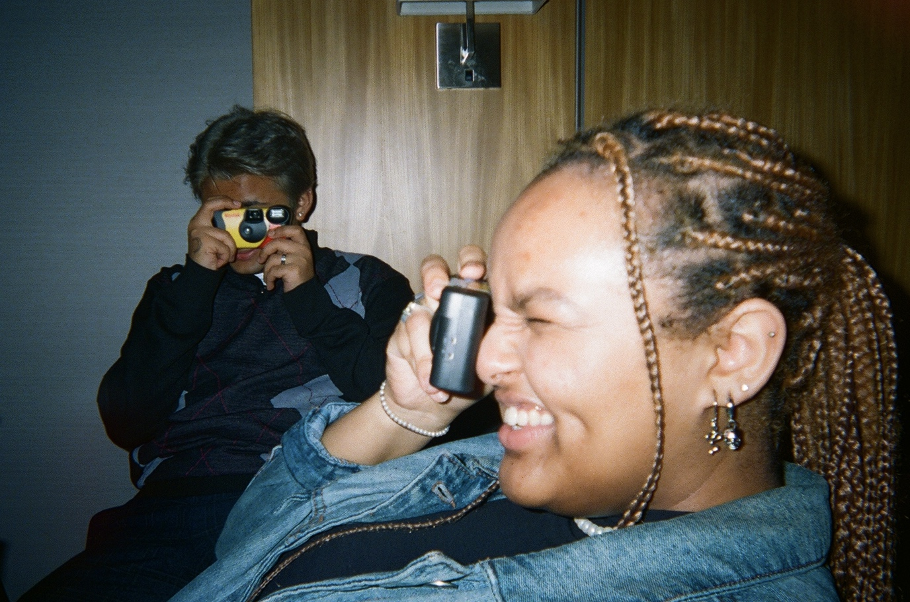
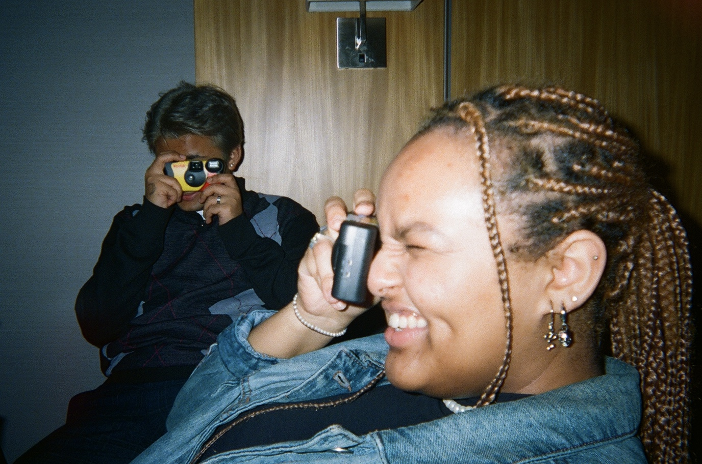

Growing up, I've always been interested in photography. Whether it was taking
photos on my iPhone and editing them in free mobile apps, taking a course at the YMCA,
shooting photoshoots with friends, or doing it in my casual time,
I have always been interested in using photography as a means of artistic expression.
But, it wasn't until I took notice to how taking film photos with a disposable camera
was becoming popular online did I become interested in how I can
change how I celebrate and document my own memories with friends and
of life in general.
What I loved about the idea of shooting on film though is the nostalgic, wholesome,
almost "dream-like" feel that film photos have, making every shot taken feel already
like a faded memory from a decade ago that you're already looking back.
Besides this, the nature of the disposable camera itself is what also helps feed into the
free-spirited notion of "living-in-the-moment", as taking a photo takes only a few seconds,
only for the photos to only be allowed to be seen once they are developed.
This subtle idea makes it easier to carry on with the memory you are in the
middle of making and continue to enjoy yourself in the presence of others
without any interruption.
In this way, I was interested in how I can use the means of film to preserve memories
with friends and document what happens around me in a more lively and
sentimental manner, one that is a huge change
from the rushed, chaotic, and superficial nature of how we document our
lives on social media. Because of this, nowadays I like to carry around
disposable cameras with me during special occasions
as well as love to get involved with my friends who shoot film.
Below are just some of the photos I've taken on film before!


 
